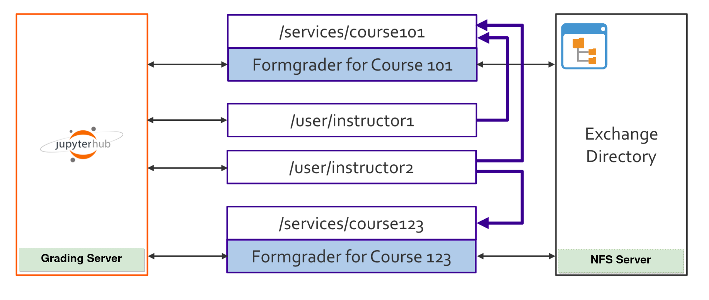
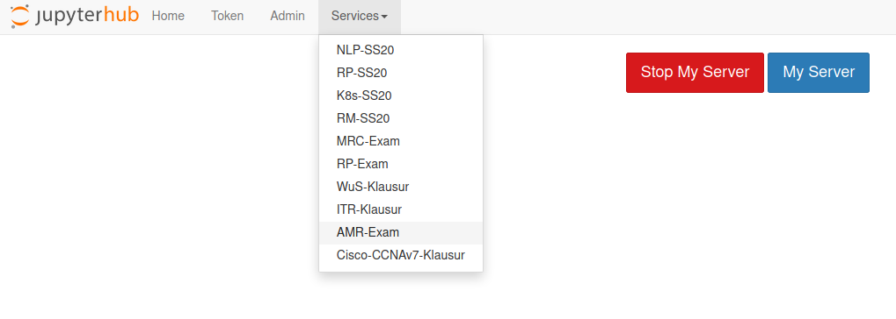

E2X JupyterHub¶
JupyterHub serves Jupyter Notebook to multiple users and frees them from the hassle of installing environment and managing resources. We use JupyterHub in most of Master Autonomous Systems courses both for teaching and examination.
We separate instructor (grading) and student JupyterHub servers.

Grading Server¶
The grading server runs on a single server and also has nbgrader installed which supports multiple graders and courses. This server is shared among instructors, graders and professors so that they can create, release, collect and grade the assignments through this server. They can only have access to specific courses thet they teach.
The courses are shared via JupyterHub services which give professors, instructors and graders access to the courses they teach. Professors and instructors have access to the formgrader to create, release, collect and grade the assignments. However, the graders can only grade the assignments.
The assignments are released to a NFS shared directory, which resides on the grading server as well.
Teaching and Exam Servers¶
The students servers run on Kubernetes cluster provisioned using Zero-to-JupyterHub which provides a great step-by-step tutorial on how to install JupyterHub on Kubernetes on different cloud providers.
The Hub for teaching and examination also comes with nbgrader installed. FB02 LDAP is used as the authentication. We mount the courses using nfs client provisioner.

Both servers are designed in such a way that only registered students can have access to the courses they are registered for. Thus, students who have access to the JupyterHub are not necessarily able to see the courses if they are not registered.
To achieve this, we add a bunch of config to the JupyterHub prespawn hook. Once the user log in, the hook will check the courses the user is registered for, if none is found no courses will be mounted. Otherwise, the user can fetch and submit all the released assigments of all courses he or she is registered for.
Teaching Server¶
Accessible via ssh port forwarding to home.inf.h-brs.de or via FB02 vpn.
The environment can be changed by the users
Internal and external network communications are allowed
Support multiple courses
Exam Server¶
Only accessible from pool rooms, laptop pools and staff vpn
The environment cannot be changed
Internal and external network communications are blocked
Exam view extension is enabled by default and cleans up unnecessary buttons which come by default in Jupyter Notebook
The submission is always hashed
Using E2x exam kernel
The data under /home/{username} is persistent and is saved in the local university storage. Currently, this data is removed after Einsicht or evaluation on the exam which normally happens the next semester after the exam is scheduled. We strongly recommend the users to always backup your data locally.
Both exam and teaching enviroments are opensource and available on our github.
Note
There may be multiple environments offered for each class. For example, Robot Perception environment has some computer-vision related libraries and Natural Language Processing (NLP) image may come with some NLP database.